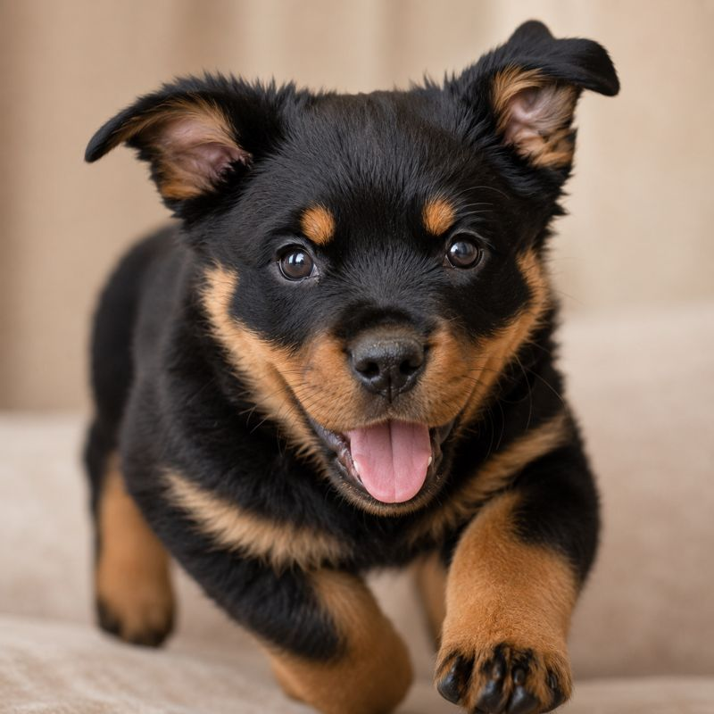
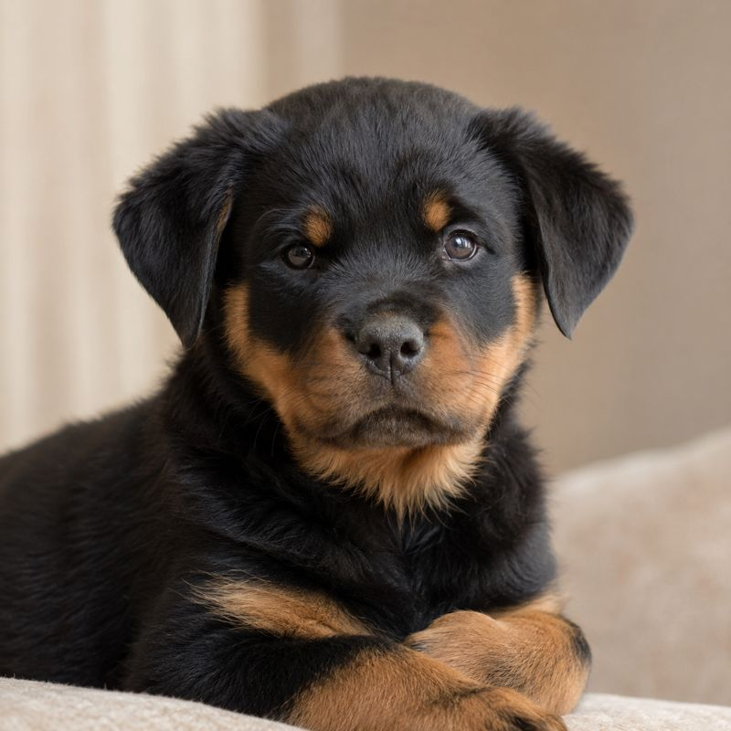
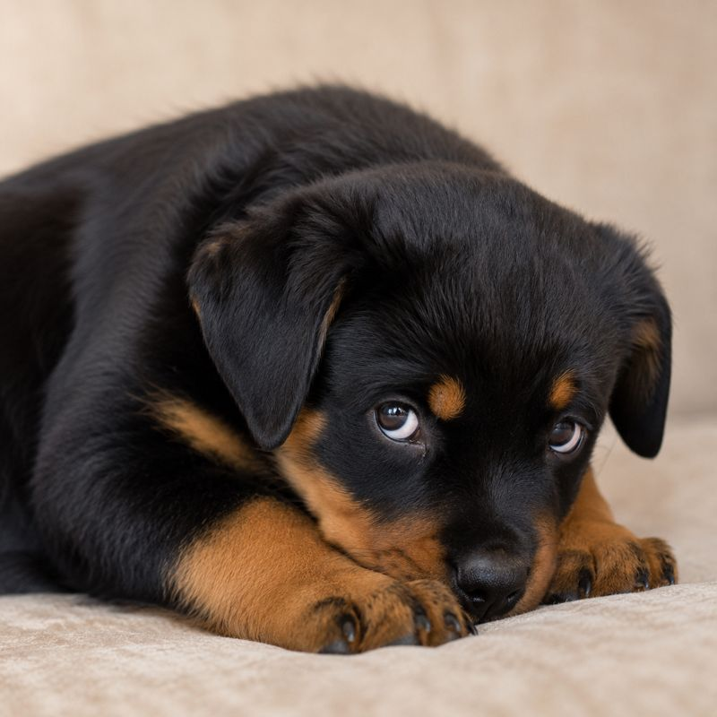
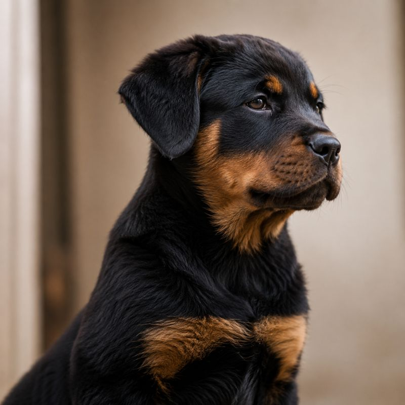

Same parents. Same food. Same blanket pile in the corner. And somehow you end up with four completely different little personalities — and most people walk in, fall for the cutest face, and never realize they just picked a stranger.
Okay so here's the thing nobody tells you before you go meet a litter of puppies: you're not choosing between "puppies." You're choosing between four very different little roommates who all happen to look adorable in the same basket.
One of them is going to drag you out of bed at 6am demanding a run. One of them is going to be perfectly happy curled up next to you for a Sunday of doing absolutely nothing. One of them is going to need three weeks just to trust you enough to eat from your hand. And one of them is going to love you completely — on their own schedule, thanks very much.
None of these are "bad" personalities. But one of them is bad for you, depending on your life. And the wild part? You can usually spot the differences within minutes of watching them play, if you know what you're actually looking at.
Here's the cast of characters you'll meet in pretty much every litter, regardless of breed. See if any of these sound familiar from a pin you've been staring at.

This is the puppy that's already halfway up your leg before you've even sat down. Tail going like a propeller, mouthing your fingers, climbing over every sibling to get to you first. Everyone in the room goes "awww" at the same time. It's genuinely magnetic.
And it's also, very often, the puppy that's going to need the most from you. Not in a bad way — just in a real, hours-of-exercise, structured-routine, this-dog-needs-a-job kind of way.
First to the food bowl, first to investigate anything new, play-bites the hardest, recovers from being told "no" in about half a second and goes right back to whatever they were doing.

This puppy plays hard for a bit, then just... stops. Wanders off, has a little sit, watches everyone else lose their minds with what can only be described as mild amusement. Doesn't need to be the center of attention, but isn't shy about it either — just genuinely chill.
This is usually the puppy people overlook because they're not throwing themselves at you. But honestly? For most first-time owners, this is the dream roommate. Easier to settle, easier to train, less likely to redecorate your couch out of sheer boredom.
Plays in short bursts then naps, doesn't escalate when another puppy gets rough, comes over to say hi but doesn't demand anything, generally unbothered by noise or new people.

Hangs back. Watches from the edge of the pile. Might take a few minutes — or longer — before they're comfortable enough to come say hello on their own terms. People sometimes read this as "less friendly" and it's really not that at all.
This puppy needs patience and a quiet-ish home to really blossom. Once they trust you, that bond runs deep. But if your household is loud, chaotic, or full of constant new visitors, this little one can struggle more than the others to settle in.
Stays near the back of the litter, startles more easily at sudden movement or sound, takes longer to approach new people, but once they bond, they bond hard and follow you everywhere.

This one's exploring. Sniffing the corner of the room, mildly interested in a leaf that blew in, occasionally glancing over at the humans like, "yeah I see you, I'll be over in a minute." Affectionate, but very much on their own clock.
Owners who want a dog constantly glued to them sometimes find this personality a little disappointing at first — and then end up loving it for exactly that reason. Low-drama, self-entertaining, content to just be near you rather than on you.
Wanders off to investigate on their own, doesn't seek attention but doesn't avoid it either, comes back in their own time, generally the most "cat-like" of the litter.
Knowing these four types is genuinely useful — you'll never look at a litter the same way again, and honestly that alone makes you more prepared than most people who've ever brought a dog home.
But here's the catch nobody mentions: "knowing the types" and "knowing which one is right for YOUR life" are two completely different skills. Plenty of people read something like this, nod along, feel very informed... and then still walk into the breeder's house and fall for the Wild One anyway. Because that's just what your heart does in the moment.
"I have had several dogs in my life but have always been baffled why some puppies become unmanageable dogs even from the same breed. This was my AHA moment."
— Ba Kiwanuka
The honest truth is that by about seven weeks old, a puppy's adult temperament is already mostly there — the dominance, the sociability, the trainability, all of it. It's visible. You just need a way to actually score it instead of going on vibes.
That's the bit I put together in How To Choose The Puppy With The Best Personality For You — ten dead-simple assessments you can run in the time you're already spending with the litter, plus a scoring system that tells you, with honestly kind of unsettling accuracy, which puppy is your Wild One, your Calm One, your Shy One, your Aloof One — and which of THOSE actually fits a person with your specific life, your home, your schedule, your experience level.
A short, no-nonsense guide that walks you through the same ten checks, in plain language, so you can sit with a litter and actually know — not guess — which puppy matches your life. Twelve years is a long commitment to leave to a coin flip.
Get the guide — $14.97